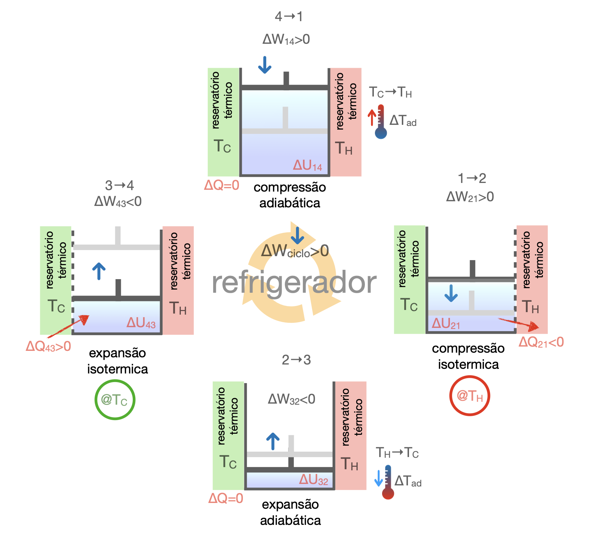
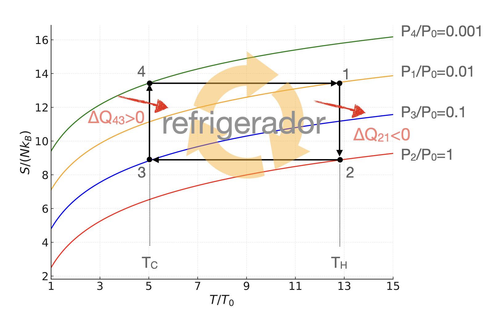

No refrigerador de Carnot o fluido recebe trabalho líquido do exterior e usa essa energia para retirar calor do reservatório frio e rejeitá-lo ao reservatório quente.

No refrigerador de Carnot o objetivo passa a ser retirar calor da fonte fria, o que exige trabalho externo.
A Segunda Lei aparece agora pelo enunciado de Clausius: calor não passa espontaneamente de um corpo frio para um corpo quente sem outro efeito externo.
No refrigerador de Carnot o fluido recebe trabalho líquido do exterior e usa essa energia para retirar calor do reservatório frio e rejeitá-lo ao reservatório quente.

O fluido fica em contato com o reservatório quente e é comprimido reversivelmente. A temperatura permanece constante, a entropia diminui e o sistema rejeita calor para a fonte quente.
Primeira Lei (geral): a isoterma deve ser escrita sem assumir previamente gás ideal.
Logo, \(\Delta W_{21}=\Delta U_{21}-\Delta Q_{21}\). Na compressão isotérmica do refrigerador, o trabalho recebido pelo sistema é positivo.
Gás ideal: como \(U=U(T)\), a isoterma tem \(\Delta U_{21}=0\).
O sistema é isolado termicamente e se expande. Sem troca de calor, o trabalho realizado pelo fluido reduz sua energia interna e sua temperatura cai de \(T_H\) para \(T_C\).
Primeira Lei (geral): numa adiabática reversível, não há troca de calor nem produção interna de entropia.
Gás ideal: a queda de temperatura fixa a variação de energia interna.
Em contato com o reservatório frio, o fluido se expande reversivelmente a temperatura constante. É nessa etapa que o refrigerador retira calor da fonte fria.
Primeira Lei (geral): o calor retirado da fonte fria é positivo para o sistema.
Na expansão isotérmica, o trabalho do sistema sobre o exterior é negativo na convenção do curso.
Gás ideal: novamente \(\Delta U_{43}=0\), pois a temperatura é constante.
O fluido é isolado e comprimido. Sem troca de calor, o trabalho recebido aumenta a energia interna e eleva a temperatura de \(T_C\) para \(T_H\), fechando o ciclo.
Primeira Lei (geral): o trabalho recebido aparece como aumento de energia interna, com entropia constante no processo reversível.
Gás ideal: a variação de energia interna é determinada pela elevação de temperatura.
No diagrama \(S(T)\), o sentido do ciclo é invertido em relação à máquina térmica. A etapa em \(T_H\) tem diminuição de entropia e rejeição de calor; a etapa em \(T_C\) tem aumento de entropia e absorção de calor.

Para um ciclo reversível, as duas variações de entropia têm o mesmo módulo. Assim,
Caso geral. O desempenho do refrigerador é medido pelo calor retirado da fonte fria por trabalho fornecido ao ciclo. Com a notação do curso, o trabalho líquido recebido é positivo, mas escrevemos o denominador em módulo para manter a definição operacional.
Carnot reversível. Como \(\Delta Q_H/T_H+\Delta Q_C/T_C=0\), obtemos o limite ideal:
Gás ideal. Nas isotermas, \(\Delta U=0\), e as adiabáticas impõem \(V_4/V_3=V_1/V_2\). Portanto,
Quando \(T_H-T_C\) é pequeno, o CoP ideal cresce; em sistemas reais, porém, perdas mecânicas, gradientes finitos de temperatura e irreversibilidades reduzem esse valor.